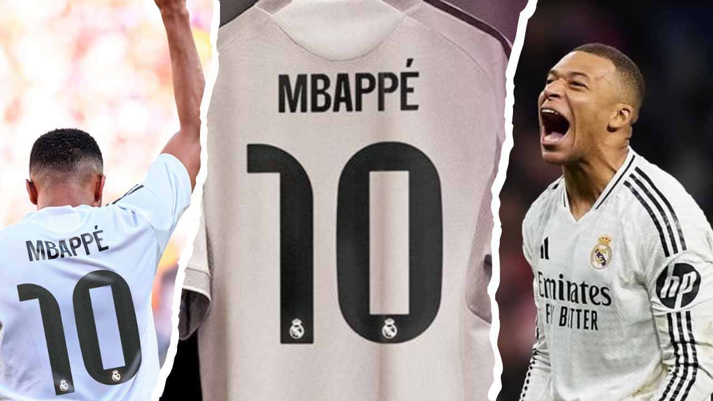
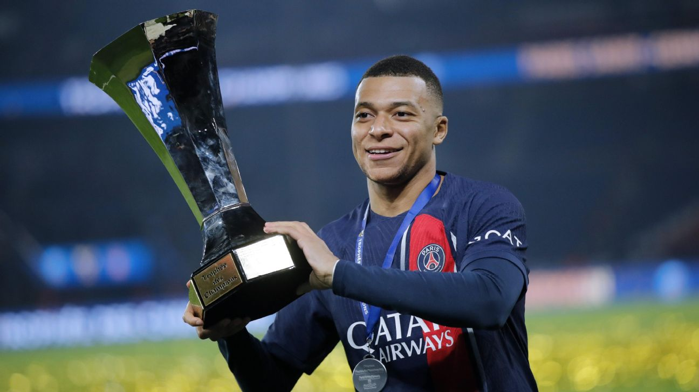
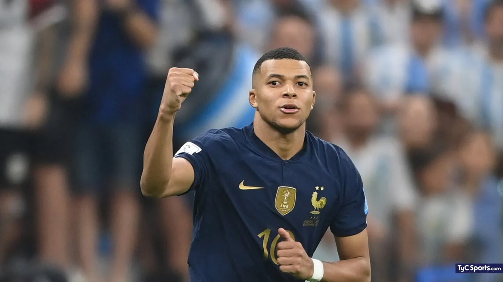

Perfil de Kylian Mbappé
Su dorsal

Kylian Mbappé lleva el dorsal 10 porque en el fútbol ese número simboliza creatividad, liderazgo ofensivo y responsabilidad para generar juego y goles. Es un número asociado a los jugadores más determinantes del equipo. Aceptar el 10 en el Real Madrid implica asumir expectativas y presión, además de la ambición de convertirse en referente del club y dejar una huella en su historia. El 10 suele ser el número de la figura creativa o el atacante más importante del equipo. Después del retiro de jugadores como Zidane y el cambio generacional, Mbappé asumió ese rol.
Su mejor gol en el Real Madrid

Kylian Mbappé sorprendió al mundo al marcar un gol de tiro libre contra el Barcelona, una anotación poco común en su repertorio. Con gran serenidad, tomó el balón y ejecutó un disparo preciso y con efecto que superó la barrera y dejó sin opciones al arquero. El gol llegó en un momento clave del partido, cuando su equipo necesitaba reaccionar, y cambió el ánimo del encuentro. Esta jugada demostró que Mbappé no solo destaca por su velocidad y definición, sino también por su calidad técnica en jugadas de balón parado, convirtiéndose en uno de los goles más recordados de su carrera.
Su carrera en el Paris Saint-Germain (PSG)

Kylian Mbappé llegó al PSG en 2017 y rápidamente se convirtió en la gran estrella del club. Formó un tridente ofensivo destacado con Neymar y Messi, fue decisivo en competiciones nacionales e internacionales y se transformó en el máximo goleador histórico del equipo. Su etapa más recordada fue la temporada 2019-2020, cuando el PSG alcanzó su primera final de Champions League. Tras siete años, se despidió en 2024 dejando un legado histórico y consolidándose como una superestrella mundial.
Seleccion francesa

Kylian Mbappé debutó con la selección de Francia en 2017 y rápidamente se consolidó como una de sus grandes figuras. Su explosión llegó en el Mundial de 2018, donde fue clave para conquistar el título y marcó goles históricos, incluyendo uno en la final. Desde entonces, se convirtió en el principal referente ofensivo del equipo.
En el Mundial de Qatar 2022 volvió a brillar al ser el máximo goleador del torneo y anotar un hat-trick en la final, confirmándose como uno de los mejores jugadores del mundo. En 2023 fue nombrado capitán de Francia, asumiendo un rol de liderazgo dentro y fuera del campo. Hoy es el símbolo de la nueva generación francesa y una pieza fundamental para el presente y futuro de la selección.
Puntos destacables
- Kylian Mbappé usa el número 10 en la Selección Francesa porque representa liderazgo, creatividad y ser la figura ofensiva principal del equipo.
- Mbappé llegó al PSG en 2017, donde formó una delantera histórica con Neymar y Messi, convirtiéndose en el máximo goleador del club.
- Durante su etapa en París ganó múltiples títulos nacionales, fue varias veces mejor jugador de la Ligue 1 y llevó al PSG a la final de la Champions en 2020.
- En la selección francesa debutó en 2017, ganó el Mundial 2018 siendo una de las figuras y fue máximo goleador del Mundial 2022.
- Fue nombrado capitán de Francia en 2023 por su liderazgo, profesionalismo y peso dentro del equipo nacional.
- Mbappé es considerado hoy la principal estrella de Francia y el jugador que guía la nueva generación del fútbol francés.